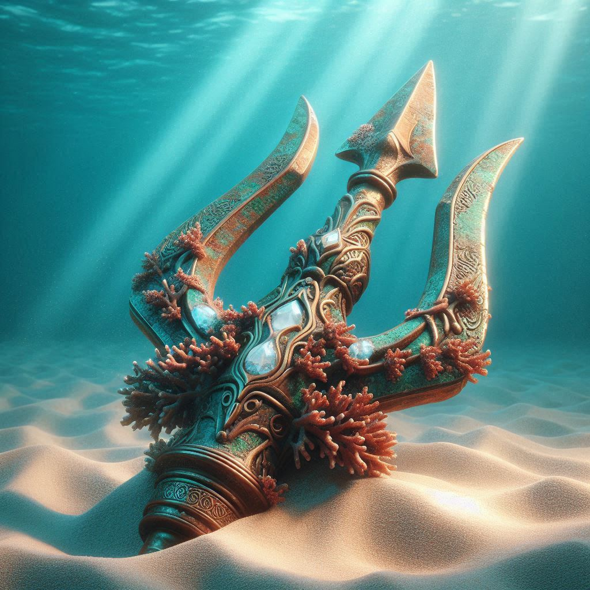
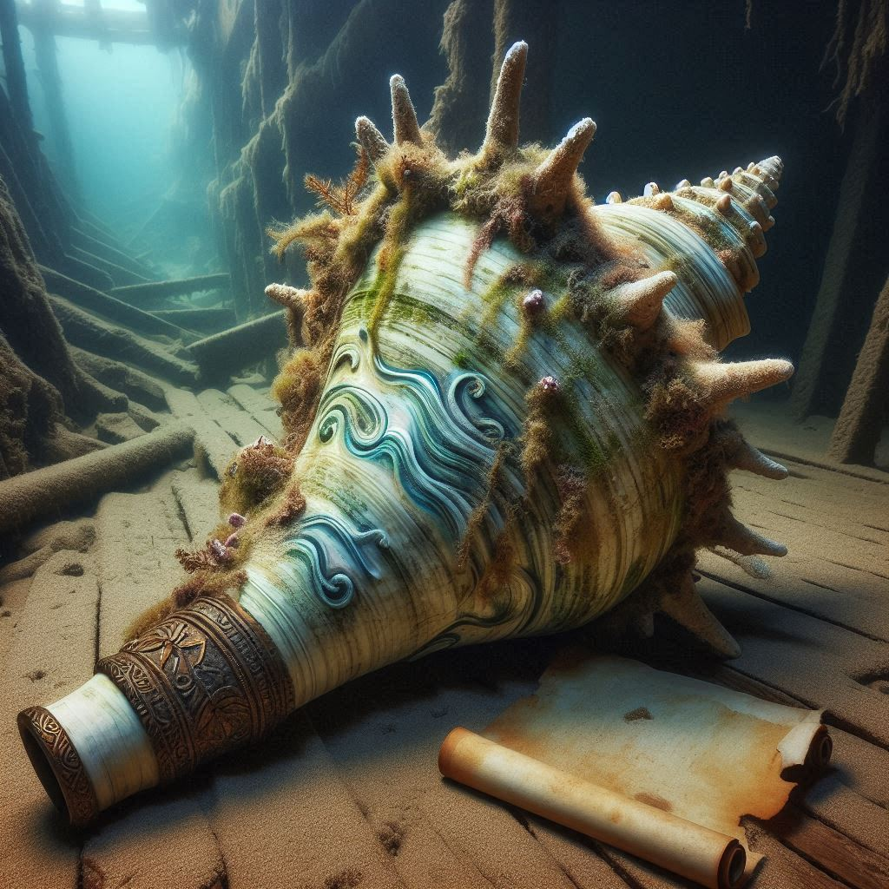
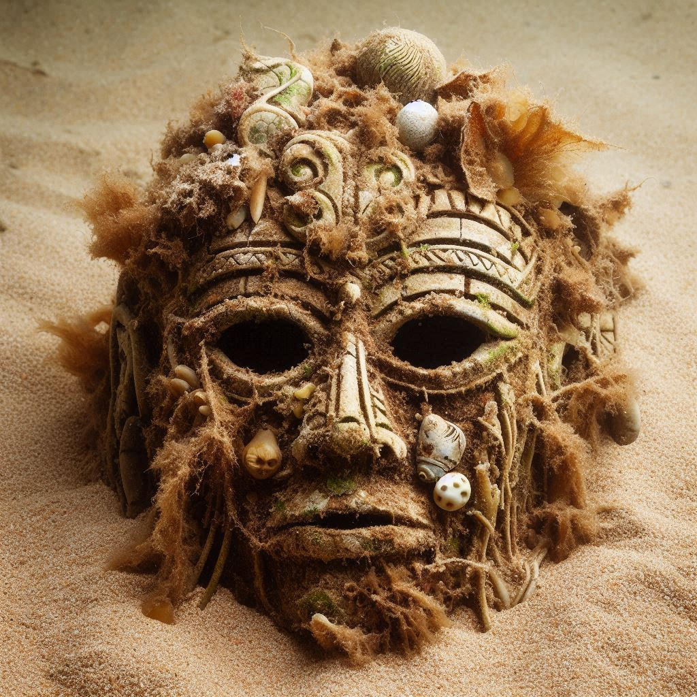
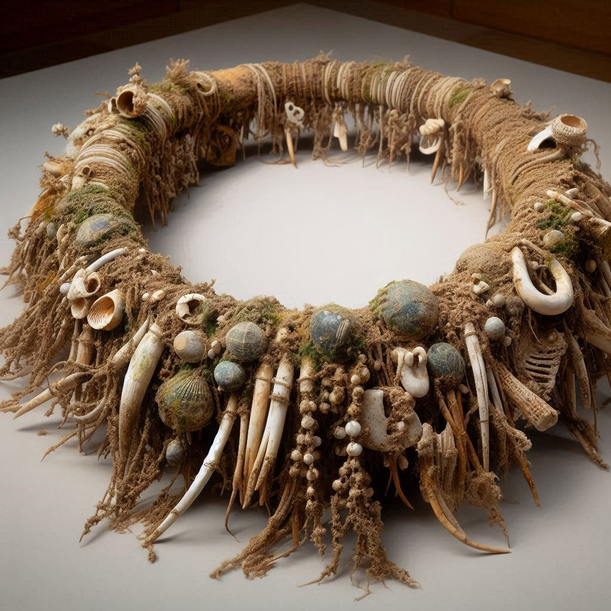
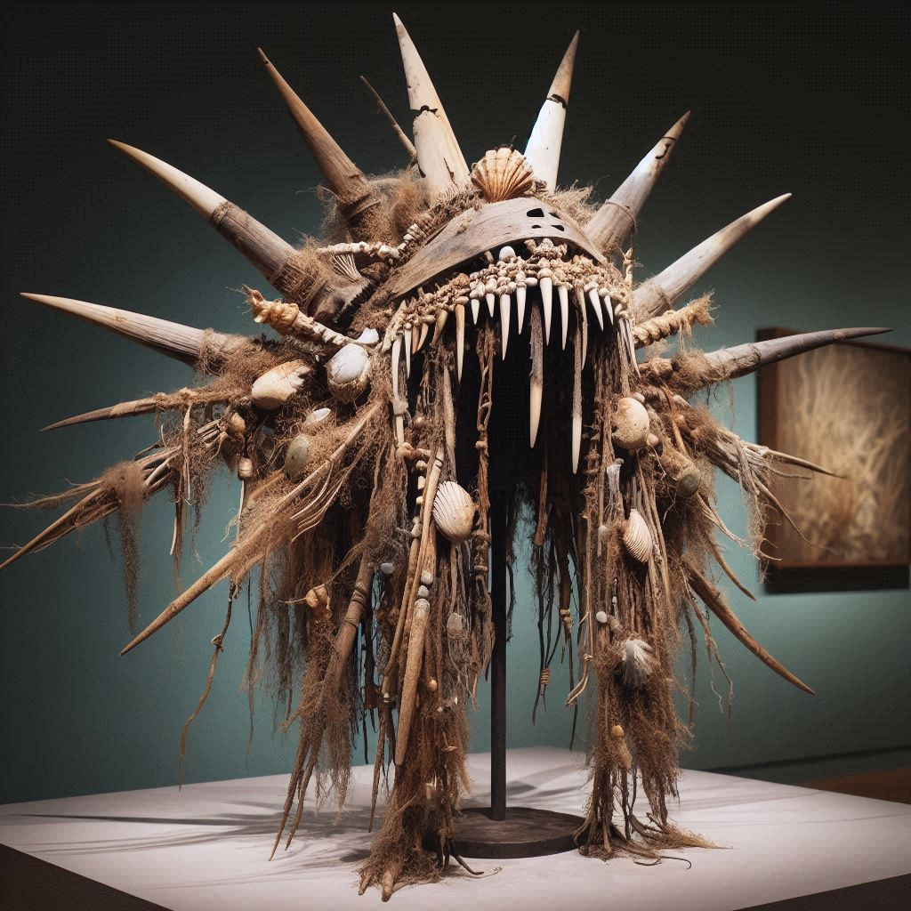

Material: Bronze alloy with traces of gold inlays.
Size/Weight/Shape: Circular, 15 cm diameter, 3 cm thick; weighs approx. 1.2 kg.
Physical Properties: Bronze surface is heavily oxidized, showing a green patina with traces of gold inlay. The disk feels solid and dense, with rough edges and smooth etching on its face.
Estimated Age: Circa 1200 CE, estimated via contextual dating and material corrosion.
Preservation State: Partial; corrosion obscures some details, but symbols and etchings remain.
Location Found: Atlantic Ocean near Azores (38.5°N, 28.0°W); buried in shipwreck hold.
Likely Purpose: Navigation or ritual tool, possibly astrolabe-like instrument used at sea.
Evidence of Use: Etching worn along outer edges; signs of frequent handling or rotation.
Manufacture Clues: Lathed grooves, stamped iconography, and hand-scratched runes.
Found With: Ceramic amphorae, rusted anchor fragments, and copper wire loops.
Burial or Habitat Context: Within collapsed wooden cargo container, embedded in compacted silt.
Symbolism: Central glyph resembles sunburst surrounded by wave symbols; may represent celestial navigation.
Comparison: Similar in shape to Byzantine astrolabes but with hybrid elements.
Ceremonial Trident Head

Material: Bronze with embedded quartz and coral inlays.
Size/Weight/Shape: 40 cm long, trident-shaped, approx. 2.8 kg.
Physical Properties: Metallic surface with slight greenish oxidation; coral and quartz inlays are still visible, with a smooth texture along the shaft and pitted areas near the prongs.
Estimated Age: 9th century BCE, possibly Phoenician origin.
Preservation State: Well-preserved with some oxidation and minor pitting.
Location Found: Submerged temple ruins, off the coast of Cyprus (35.1°N, 33.2°E).
Likely Purpose: Used in ceremonial rituals or as a symbol of maritime power.
Evidence of Use: Polishing along grip; residue of organic materials.
Manufacture Clues: Cast bronze, later engraved with religious iconography.
Found With: Coral jewelry, clay idols, and an offering bowl.
Burial or Habitat Context: Partially buried in silt inside temple chamber.
Symbolism: Three-prong shape possibly symbolized control over sea, sky, and land.
Comparison: Similar ceremonial tridents found in Minoan ruins, though smaller.
Wavecarved Horn of the Depths

Material: Polished conch shell reinforced with copper bands and inlaid with turquoise.
Size/Weight/Shape: Spiraled shell, approx. 35 cm long, weighs 1.5 kg.
Physical Properties: Smooth, polished surface with natural spiral ridges; turquoise inlays glimmer faintly under light. Marine growth and minor coral deposits adhere to the lower shell edges.
Estimated Age: Circa 600 BCE, based on stratigraphic dating and barnacle encrustation.
Preservation State: Excellent; marine growth present but acoustic chamber intact.
Location Found: Within sunken galley near Crete (35.2°N, 25.1°E), surrounded by ritual items.
Likely Purpose: Ceremonial horn used for summoning or signaling during oceanic rites.
Evidence of Use: Lip and rim show signs of prolonged blowing and contact wear.
Manufacture Clues: Intricate wave motifs carved with metal tools; copper seal at mouthpiece.
Found With: Bronze mirrors, engraved sea-stone amulets, and tattered linen shrouds.
Burial or Habitat Context: Resting beside a scroll and driftwood planks in a collapsed ship cabin.
Symbolism: Spiral shape and wave carvings represent cycles of tides and sea spirits.
Comparison: Shares features with South Pacific ceremonial conch horns, but with distinct Hellenistic embellishments.
Anthropology Collection
Tip: Click any image to view its Interpretation.
Ancient Submerged Mask

Material: Carved driftwood with seaweed fiber accents and fishbone inlays.
Size/Weight/Shape: Oval, approx. 30 cm tall, 20 cm wide, 1.1 kg.
Physical Properties: Surface is rough and waterworn, with softened edges and visible algae encrustation. Fiber accents are brittle but largely intact, and fishbone inlays retain a faint sheen.
Estimated Age: Circa 1100 CE, aged via carbon dating and material wear.
Preservation State: Algae-covered surface, but carvings remain visible beneath layers.
Location Found: Submerged ritual site near Micronesia (6.9°N, 158.2°E).
Likely Purpose: Ceremonial use in oceanic ancestor worship or rites of passage.
Evidence of Use: Strap marks and discoloration suggest frequent wearing during rituals.
Manufacture Clues: Hand-carved with obsidian tools, decorated with local sea life materials.
Found With: Woven baskets, stone figurines, and shell instruments.
Burial or Habitat Context: Discovered in a sea cave altar beneath coral overhang.
Symbolism: Mask features wave and spiral carvings representing the cycle of tides and spirits.
Comparison: Similar to Polynesian and Melanesian ceremonial masks with marine motifs.
Submerged Tribal Necklace

Material: Bone fragments, shells, braided sea plant fibers.
Size/Weight/Shape: Crescent-shaped, 35 cm length, approx. 0.4 kg.
Physical Properties: Rough and porous texture from calcification; bone surfaces are matte and brittle, while shell beads have dulled iridescence with algae staining the fiber bindings.
Estimated Age: 900–1100 CE, based on fiber degradation and shell erosion.
Preservation State: Algae-covered and partially calcified; structure remains intact.
Location Found: Submerged tribal shrine near Papua New Guinea (3.5°S, 143.5°E).
Likely Purpose: Ceremonial necklace worn by tribal leaders or shamans during rituals.
Evidence of Use: Fiber wear and broken binding points suggest regular handling.
Found With: Stone totems, bone flutes, and woven offering baskets.
Burial or Habitat Context: Found atop a sunken coral altar layered in sediment.
Symbolism: Shells and bones arranged in patterns symbolizing life, death, and sea spirits.
Comparison: Resembles early Oceanic tribal adornments from Melanesian culture.
Abyssal Ceremonial Headdress

Material: Driftwood base, shark teeth, shells, seaweed fibers, and bone fragments.
Size/Weight/Shape: Crown-shaped, approx. 50 cm tall, 40 cm wide, 3.2 kg.
Physical Properties: Surface combines rough driftwood texture with jagged bone tips and smooth shell accents. The entire piece feels heavy and dampened by mineral buildup, with fibrous strands stiffened by saltwater exposure.
Estimated Age: Circa 1000 CE, determined through organic fiber degradation and salt crystallization.
Preservation State: Moderate; some bone elements are brittle but structure remains intact.
Location Found: Submerged ceremonial chamber near the Solomon Islands (9.6°S, 160.2°E).
Likely Purpose: Worn by tribal leaders or shamans during deep-sea rituals or ancestor invocations.
Evidence of Use: Headband and interior show repeated contact wear; sea salt residue found on binding seams.
Material Cast bronze with faint gold inlay; lathed groove, stamped icons, hand-incised marks
Origin Cargo hold of a wreck near the Azores archipelago
What the Experts Believe
Experts increasingly view the Navigator’s Disk as a hybrid instrument that joined seamanship to ceremony. Its bronze body with faint gold inlay reads as a practical tool built to be handled in low light and rough weather; the lathed groove and finger-worn outer track suggest repeated rotation while a navigator consulted the face. Concentric symbol bands likely condensed pattern knowledge—star rises, swell directions, and seasonal winds—into a compact prompt for memory. Four deeper notches appear to mark the great seasonal headings crews favored on long crossings, functioning like a mnemonic “gate” a sailor would feel before glancing up to verify the sky. Because the remaining inlay sits at compass-like intervals, the disk probably offered a quick visual register below deck, especially when paired with a small lamp.
Yet the object also signals a ritual dimension. Several glyphs depict stylized waves and a protective eye, motifs that elsewhere accompany seafaring petitions and safe-passage invocations. Bundled with cordage and a little oil lamp in the wreck, the disk may have formed part of a portable kit used during pre-departure rites—light the lamp, turn the disk through its stations, speak the vows, and set the ship to its initial bearing. A finger’s pause at the deeper notches could have cued a spoken refrain shared by the crew, synchronizing intention before the moment of launch. In this sense, the disk allowed navigators to “read” both the heavens and their community, aligning group attention as carefully as headings.
Craft traces reinforce this dual identity. Stamped icons sit atop hand-incised corrections, implying the face was adjusted through use rather than fixed at manufacture. Such iterative surfaces are common on tools that travel through apprenticeships: masters pass on a working object while adding marks that encode local routes, reefs, or omens. Wear around the central eye hints the piece was sometimes touched rather than merely consulted—a small act of asking for luck that leaves a halo of polish. Taken together, the Navigator’s Disk exemplifies how maritime knowledge often braided calculation with ceremony: a compact, turnable archive that kept stars, swells, and vows at hand when the horizon disappeared and judgment mattered most.
Comparative Notes
Conceptually, the disk sits between Mediterranean mariner’s astrolabes (metal, measured) and Pacific stick charts (mnemonic, performative). Like early astrolabes, it uses durable metal, precise circles, and repeatable reference points; like mnemonic charts, it encodes pattern knowledge rather than strict calculation. A few symbols resemble wind-rose petals common to medieval portolan traditions, though the engraving style is distinct.
Cautionary Note on Interpretation
No surviving manual accompanies the disk. Star alignments and ritual readings remain hypotheses derived from wear patterns, symbol clustering, and cross-cultural analogy. Future residue analysis beneath the inlay and experimental reconstructions may refine or overturn these claims.
On display Courtesy Of…
Museum of Deep Sea Mysteries; Calderon Expedition Archives (2025) and partners in Azores Maritime Heritage.
Culture Unidentified coastal/lagoon community (provisional)
Estimated Age ca. 1000–1200 CE
Material Cast bronze head for wood shaft; incised chevrons and wave motifs
Origin Reef-pass ledge near a submerged shoreline plaza
What the Experts Believe
Although tridents can be tools, this cast-bronze head looks purpose-built for symbolism and sound. The prongs are spaced too widely and bluntly for efficient spearing, but they would have produced an impressive acoustic strike when the mounted shaft met stone or drum. That resonance is not incidental: ceremonies along reef edges and shoreline plazas often employ percussive cues to order speech, dance, and processions. The engraved chevrons and wave motifs read as “bands” of authority—visual rules that travel the length of the staff so the emblem communicates at a distance. Paired dots between chevrons plausibly index offices within a coastal hierarchy, a kind of notch-count the community could read without writing.
In performance, the triple point likely enacted a choreography of opening and closing: leaders could “part” the sea’s dangers, turn the staff to mark the four winds, or cross the points to end a petition. When tapped on a plaza stone, the head would ring, the shaft would hum, and the shoreline would carry the sound outward—an audible claim that tides, families, and boats should fall back into rhythm. Tridents in many maritime cultures signal order, weather, and divine attention; here the engraving style and find spot near a reef pass emphasize civic coordination more than conquest. The object reads less like a weapon of enforcement than a metronome of agreement.
Material choices deepen the case. Bronze tolerates salt and holds crisp incisions; repeated handling polishes high ridges while sea air greens recesses, creating a legible contrast the community could maintain with oiling and cloth. If the missing shaft once bore shells or fiber streamers, it would have added motion and hiss to the strike—further blurring boundary lines between sound, sight, and command. Micro-polish on the prongs could result from anointment rituals rather than subsistence work, consistent with a staff lifted, turned, touched to offerings, and retired upright at the ceremony’s edge. In short, the trident head appears to have governed how people moved together at the water’s threshold, articulating leadership not only through icon and metal, but through tempo.
Comparative Notes
Mediterranean images of sea deities popularize tridents, but closer analogs are Oceania’s multi-pronged dancing staffs and Southeast Asian ritual spears, where sound and stance matter more than penetration. The chevron banding resembles patterns on coastal drums recovered in related contexts.
Cautionary Note on Interpretation
Without the wooden shaft and full performance setting, function remains inferential. Tool-use cannot be entirely excluded; micro-polish on prongs might also result from repeated cloth contact during anointment, not subsistence work.
On display Courtesy Of…
Museum of Deep Sea Mysteries; Coastal Ritual Collections Program.
Material Large marine conch with bone mouthpiece; resin sleeve; spiral/eye incisions
Origin Entrance shelf of a flooded limestone cave with torch-soot traces
What the Experts Believe
This conch trumpet embodies the oldest technology of the sea: breath shaped into direction. The shell’s interior naturally coils sound; carving spiral lines on the exterior makes that physics visible and meaningful. Performers report that such grooves help the hands find a stable grip, keeping the bell pointed where the sound is needed—toward boats outbound at dawn, toward a crowd awaiting the first response, or toward a cave ceiling to wake echoes. Eye glyphs on the body address both directions at once: one looks outward over the water as a warning and guide, another peers back along the shell toward the player, binding vigilance to responsibility. A bone mouthpiece sleeved with resin stiffens the embouchure, making blasts repeatable even with cold lips and damp fingers.
The horn’s discovery on a limestone ledge with torch-soot traces places it at a threshold where surface and underworld meet in coastal belief. Blown at such entrances, conches often announce crossings—into season, into adulthood, into sacred space. Sound here is not just signal but escort: the blast travels ahead like a path the body can follow. Uneven soot patterns imply the instrument was tilted upward between calls, a gesture that matches call-and-response rites in which a first summons seeks consent from spirits or ancestors and a second confirms the way is clear. In storms or fog, the horn could also serve as a lifesaving locator. People learn the timbre of their own horn; on open water, that recognition can be the difference between guessing and finding.
While Mediterranean and Pacific traditions supply obvious parallels, this horn’s hybrid details—bone sleeve, resin, spiral incisions framing eye signs—mark a local grammar of sound technology. The object teaches breathwork: strong inhalations through the nose, a supported diaphragm, and a quick embouchure reset to cycle blasts with minimal fatigue. Such bodily knowledge usually travels alongside stories about when not to blow—a cultural safety manual embodied in taboo. That the horn was left at a cave entrance suggests retirement with honors rather than discard. Its silence on the ledge becomes a permanent note in the landscape: here people once called the sea and listened for its answer.
Comparative Notes
Maritime societies from the Mediterranean to Polynesia employ shell trumpets. In Polynesia, carved motifs often encode clan or voyage identity; in the Andes, conch trumpets (pututus) signaled processions and sacred time. Our horn’s hybrid features—bone sleeve, resin, and spiral linework—fit a broader, global grammar of maritime sound technology.
Cautionary Note on Interpretation
Without surviving performance narratives, specific meanings of glyphs remain uncertain. Acoustic modeling and residue analysis could clarify whether oils or pigments once enhanced ceremonial visibility.
On display Courtesy Of…
Museum of Deep Sea Mysteries; Sound & Signal Initiative.
Material Carved hardwood with shell & bone inlay; plant-fiber bindings
Origin Submerged platform near a lagoon inlet
What the Experts Believe
Masks authorize transformation by reshaping how a face receives light, breath, and attention. This hardwood example enlarges the brow and cheeks into planes that catch flicker, while leaving mouth and nostrils free for song and breathwork. Shell and bone inlays create tiny mirrors that flash as the wearer turns, a deliberate effect in dim coastal settings where fire, moon, or wet surfaces supply moving spark. Such flashes do not merely decorate; they “wake” ancestral attention in many maritime rites, translating motion into message the way a lighthouse turns steady flame into a sequence.
The lagoon-edge find spot argues for ceremonies staged at tidal thresholds where kinship with marine beings is negotiated. In seasonal rites a lead officiant may don this mask to mark first catches, to mourn drownings, or to initiate youth into maritime adulthood. The interior polish at the chin and temples, coupled with repeated binding wear, signals long use by multiple performers. Water staining along those binding channels shows the mask was regularly bathed—either to cool and clean it between sequences or as a final retirement act when its service ended. Bathing sacred objects is common where sea and personhood interpenetrate; the gesture gives the artifact a last journey home.
Form also suggests pedagogy. The broad brow reads at a distance, allowing a chorus or crew to sync with the leader’s head cues. Carvers left subtle ridges at the corners of the mouth; when drummed air passes, those ridges amplify syllables, helping words carry. Shell flashes answer the drum the way wave-crests answer wind—by patterning reflection. Comparative sets from Oceania and the Americas show similar priorities: identity is not concealed but expanded, the performer becoming more than one. That doubleness explains lingering caution around assigning a fixed deity name here. Without descendant guidance we center performance traces and context: a mask that moved bodies, educated breath, and bound mourning to renewal at the shifting edge of sea and land.
Comparative Notes
Across Oceania and the Americas, masks signal identity shifts rather than concealment. The shell-flash technique parallels coastal headdresses that “speak” in reflected light. The chin rest and interior polish are consistent with repeated, active performance rather than static burial furniture.
Cautionary Note on Interpretation
We cannot assign a specific spirit-name or deity without descendant community guidance. Today, our reading centers performance traces and find context while respecting multiple possible meanings.
On display Courtesy Of…
Museum of Deep Sea Mysteries; with thanks to community advisors in the region and Dr. Luna Fernandez’s outreach program.
Material Bone & shell elements on braided marine fibers
Origin Submerged shrine with stone totems and woven offering baskets
What the Experts Believe
This necklace reads as leadership you can hear. Bone elements articulate along the chest so that even a slow step creates a soft percussion, while shell groupings form luminous nodes that catch firelight and moonrise. That double register—sound and shine—lets the wearer communicate in movement during processions or crowded rites. Triads and quincunxes in the shell arithmetic likely mark clan ties, ritual offices, or exchange obligations; such counting schemas let status travel without writing. The braided marine fibers, swollen and stained by salt, speak to a maker who knew how to bind a body for wet environments where leather slips and metal corrodes.
The shrine context—with stone totems, bone flutes, and woven offering baskets—places the necklace inside a program of ritual media rather than personal vanity. Leaders may have worn it when addressing ancestors, mediating disputes, or launching voyages. Repairs at binding points show the piece remained in circulation across generations, perhaps moving from leader to leader as responsibilities shifted. The gentle chest percussion would have synchronized group steps and breath, turning a line of bodies into a single instrument; in that sense the necklace was less jewelry than a conductor’s baton you wear. Sound that small matters in ritual because it binds attention up close while larger drums carry the same rhythm outward.
Comparative sets from early Melanesia and coastal Southeast Asia favor sea-sourced materials for durability and meaning: shell’s sheen travels, bone remembers meals and kin, and fiber carries the work of many hands. Our example fits the pattern yet retains local flavor in its arithmetic and spacing. Because no inscriptions survive, specific rank names remain unknown, and alternate readings—marriage exchange, visiting dignitary, or initiation badge—cannot be fully excluded. Still, the combined evidence of repair history, shrine deposition, and performance-friendly design argues for a wearable statement of belonging and authority. In use, the necklace turned a single body into an emblem others could follow; at rest on the altar, it continued to articulate prayers for safe seas and the return of voyagers.
Comparative Notes
Early Melanesian adornments use similar shell arithmetic to encode status and exchange value. Parallels with coastal Southeast Asian regalia highlight convergent solutions: durable sea-sourced materials, rhythmic movement, luminous surfaces that read from a distance.
Cautionary Note on Interpretation
Without inscriptions, specific rank terms remain unknown. Our reading prioritizes wear patterns, repair history, and shrine context to infer ritual leadership.
On display Courtesy Of…
Museum of Deep Sea Mysteries; Community Stewardship Collection.
Material Driftwood frame, shark teeth & bone spikes, shell pendants; seaweed lashings
Origin Coral pedestal inside an underwater cave sanctum
What the Experts Believe
The headdress stages authority as a living perimeter. A driftwood crown supports shark-tooth and bone spikes that project outward like a defensive halo, turning the wearer into a boundary between domains. Suspended shells chime with breath and step, creating a constant acoustic shimmer that announces presence without speech. Such multisensory design is typical of regalia that must read in turbulence—spray, darkness, and crowd. The coral-pedestal find spot inside a cave sanctum suggests the piece saw both performance and formal retirement, a life cycle common to high-status gear.
In deep-sea rites the crown likely marked the person charged with negotiating currents, storms, and luck. Obsidian shards in the associated assemblage evoke cutting and separation; combined with the crown, they point to rituals that “cut channels” through misfortune, sever bad ties, or open safe passage. Seaweed lashings and hand-drilled shell plates indicate local manufacture adapted to wet conditions: fibers swell to hold fast, shells shed water and throw light, and the wood frame absorbs shock while distributing weight. Interior wear and salt crystallization where a headband would sit tell of repeated use. A steady wearer would learn to move as the crown asks—slow pivots to keep spikes visible, measured steps that keep shells articulate but not chaotic.
Comparative examples across the Pacific Rim echo the grammar—sharp elements to ward harm, luminous surfaces for distance reading, percussive components to synchronize groups—while the exact meanings vary. Here, the coral retirement and cave setting suggest leadership oriented less toward warfare and more toward custodianship of relationships with marine ancestors. That orientation explains why the headdress performs at thresholds: entrances to caves, beaches at low tide, the first steps into deep water. Because names of past wearers are unknown, ongoing consultation with descendant communities remains essential; interpretations should update as permissions and teachings evolve. For now, evidence indicates a crown that did not merely symbolize authority but enacted it—by making the leader the hinge where sea and society met.
Comparative Notes
Crowned regalia combining tooth, bone, and shell appears across the Pacific rim; meanings vary, but the grammar is consistent: luminous surfaces for visibility, sharp elements to ward harm, and rhythmic components to synchronize group movement. Our example’s coral-pedestal deposition parallels ritual retirements in other sea-linked traditions.
Cautionary Note on Interpretation
We cannot confirm personal names or offices for past wearers. Descendant consultation is ongoing; interpretations will be updated to reflect community perspectives and permissions.
On display Courtesy Of…
Museum of Deep Sea Mysteries; with thanks to regional cultural councils and the O’Malley Storytelling Program for interpretive review.
~1200 CE | Atlantic Ocean near Azores | Bronze alloy with gold inlays
Recovered from a shipwreck’s collapsed cargo hold, this 15 cm bronze disk bears a central sunburst surrounded by wave glyphs, suggesting both navigational and symbolic roles in seafaring life. Its lathed grooves, stamped iconography, and hand-scratched runes reveal a skilled maker, while traces of gold inlay point to a valued object, possibly owned by a captain or navigator. The worn edges and smooth rotation marks hint at repeated handling, perhaps for celestial charting or ritual invocation at sea.
Found alongside amphorae, anchor fragments, and copper wire loops, the disk blends features of Byzantine astrolabes with distinct regional motifs. This hybrid design reflects a fusion of practical technology and personal identity, marking its owner as both a mariner and a cultural emissary. Though corrosion obscures some details, the artifact remains a striking testament to ingenuity, navigation, and the symbolic language of the ocean.
Ceremonial Trident Head
9th century BCE | Coast of Cyprus | Bronze with quartz and coral inlays
Recovered from submerged temple ruins, this 40 cm bronze trident bears finely engraved religious iconography and inlays of quartz and coral, preserved despite centuries underwater. Polishing along the grip and traces of organic residue suggest repeated ceremonial handling rather than combat use. Its three-pronged form, possibly symbolizing dominion over sea, sky, and land, aligns with maritime power traditions known in Minoan and Phoenician cultures.
Surrounding finds — coral jewelry, clay idols, and an offering bowl — confirm its ritual setting. Crafted through bronze casting and later engraving, the piece reflects high-status ownership and enduring symbolic value. Its survival offers rare insight into the ceremonial vocabulary of coastal civilizations, where maritime authority was both political and spiritual. This trident’s elegance and context speak to a legacy of leadership expressed through artistry, symbolism, and the mastery of the sea’s resources.
Wavecarved Horn of the Depths
~600 BCE | Near Crete | Conch shell with copper bands and turquoise inlay
Recovered from a sunken galley, this polished ceremonial horn is carved with wave motifs and accented by turquoise inlays that shimmer under light. Copper bands reinforce its spiral form, while marine growth along the edges and wear on the mouthpiece indicate long-term use in summoning or signaling during oceanic rites.
Found with bronze mirrors, engraved amulets, and linen shrouds, the horn’s association with other ritual objects reinforces its sacred role. Its spiral shape and carved waves evoke cycles of tides and the belief that sound could connect human voices with the ocean’s spirit. While it shares traits with South Pacific conches, the copper fittings and Hellenistic embellishments mark it as a product of localized craftsmanship. Both functional and symbolic, the horn embodies a fusion of acoustics, artistry, and deep-sea devotion. Today, its acoustic qualities are studied to understand ancient maritime communication and ceremonial traditions.
Ancient Submerged Mask
~1100 CE | Micronesia | Driftwood with seaweed fibers and fishbone inlays
Recovered from a submerged ritual site, this 30 cm carved mask shows softened edges from waterwear and a thin layer of algae over its surface. The brittle but intact seaweed fibers and faintly lustrous fishbone inlays reflect the maker’s skill and resourcefulness with local marine materials. Strap marks and discoloration suggest frequent ceremonial use, likely in ancestor worship or rites of passage.
Discovered with woven baskets, stone figurines, and shell instruments, the mask fits within a wider tradition of Oceanic ceremonial regalia. Its wave and spiral motifs echo the cycles of tides and spirits, linking the wearer to a lineage defined by its connection to the sea. Both an artistic creation and a cultural emblem, the mask offers a glimpse into the spiritual vocabulary of coastal communities and the enduring power of marine symbolism. Modern reconstructions allow visitors to experience its fit and view, deepening cultural and spiritual understanding.
Submerged Tribal Necklace
900–1100 CE | Papua New Guinea | Bone, shells, sea plant fibers
Recovered from a submerged shrine, this crescent-shaped necklace measures 35 cm and features bone fragments and shells strung on braided sea plant fibers. Calcified surfaces, dulled shell iridescence, and algae-stained bindings reveal centuries underwater, while fiber wear and broken binding points suggest regular ceremonial use by tribal leaders or shamans.
Found with stone totems, bone flutes, and woven offering baskets, the necklace’s arrangement of shells and bones reflects beliefs about life, death, and sea spirits. Comparisons to early Melanesian adornments highlight a shared tradition of symbolic ornamentation. More than a decorative piece, this necklace served as a visual statement of identity, authority, and spiritual connection — a wearable link between the human world and the rhythms of the ocean. Contemporary artisans in the region have recreated similar necklaces for cultural festivals, demonstrating the enduring symbolism and connection these designs maintain within coastal traditions and community identity.
Abyssal Ceremonial Headdress
~1000 CE | Solomon Islands | Driftwood, shark teeth, shells, bone fragments
Discovered on a coral pedestal in an underwater cave sanctum, this crown-shaped headdress combines rough driftwood, jagged bone tips, and smooth shell accents, bound together with seaweed fibers stiffened by saltwater exposure. Its weight and mineral-encrusted surfaces speak to both its age and ceremonial importance.
Evidence of repeated wear — from salt residue on seams to interior contact marks — suggests it was donned during deep-sea rituals or ancestor invocations. Found with ritual drums, carved idols, and obsidian shards, the headdress fits within a broader tradition of oceanic spiritual regalia. The spikes are believed to represent spiritual defense, while hanging shells may have signified communication with the sea realm. Combining artistry, symbolism, and the harsh beauty of marine materials, this piece stands as a striking testament to the power and pageantry of coastal ritual life. Museum conservation teams have stabilized its materials, ensuring this rare emblem remains accessible for future study and display.